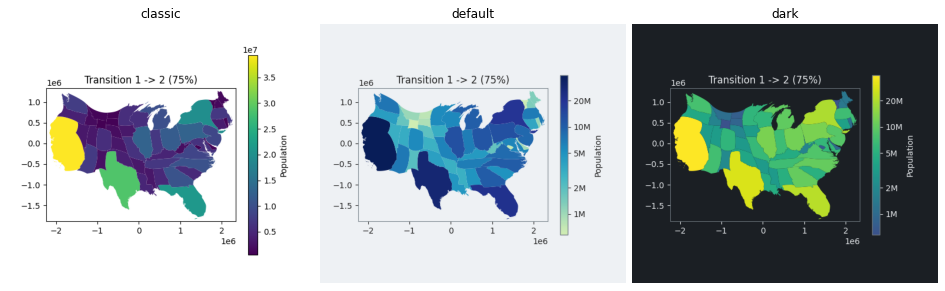
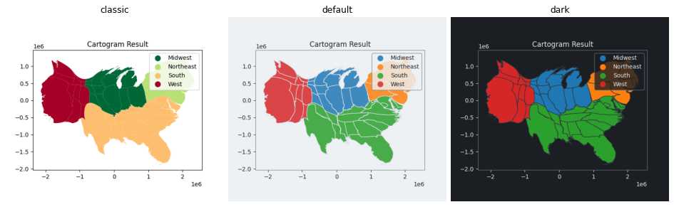
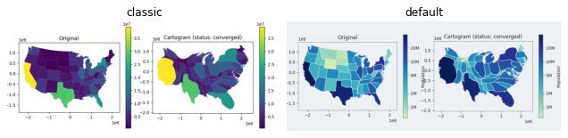
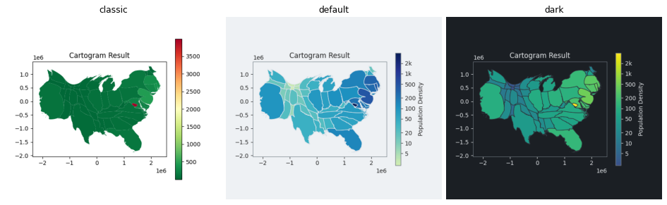
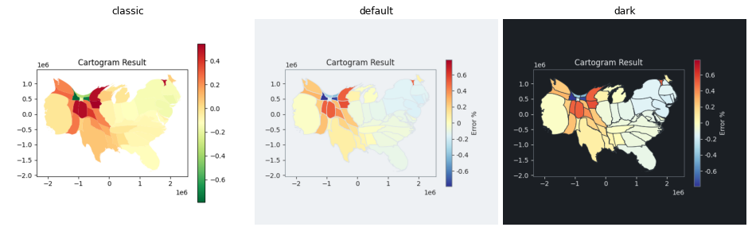
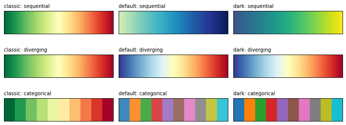
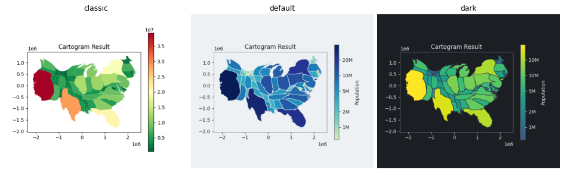

PR A of the style system. A frozen PlotStyle (matplotlib rc dict, palettes by data role, channels, color scale, colorbar fields) with the built-in styles default (the new look), dark and classic (the look before styles), a registry, style=, style_context and set_style. The flow plots and animations take style=, norm=, center= and categorical=, the data role is decided by the data, and a log colorbar has real-number ticks. morph_timeline builds the keyframes of a hold, eased morph, hold and return. The default look of every flow plot changes; style="classic" gives the earlier look.
make_figures.py draws each plot in the three styles on the PR branch. classic is the look before this PR: the facecolors of the default, Population and density plots are identical to main, and the first frame of the workflow and keyframe animations is pixel-identical. Judge the new default look on the figures below.
| call | effect |
|---|---|
cartogram.plot(facecolor="Population", style="dark") | one plot in a style |
with style_context("dark"): ..., set_style("dark") | a block, the session |
facecolor="Population", norm="log" | a normalization of the call; also a Normalize instance |
facecolor="Population", center=1e7 | diverging around the center |
facecolor="STATE", categorical=True | the categorical role for numeric data |
cmap="Reds" | wins over the palette of the style |
morph_timeline(cartogram) | keyframes and times of hold, eased morph, hold, return |
Suite 1180 passed, ruff and mypy clean; the flow gallery examples and the eight flow notebooks run without error. Tests cover the style fields and validation, the palettes and norms, the colorbar ticks, the selection order (call, block, session, default), thread isolation, rcParams restored after an exception, the classic look against plain geopandas, the roles, the shared normalization of the comparison, the animation frames after the axes is cleared, the saved frame color and morph_timeline.
defaults, the reference layer, annotation sizes and the hatch, alpha and per-channel palette use (they need the symbol plot), to_dict / from_dict, and the symbol, Voronoi and proportional plots (PR B). Saving an animation to a directory of PNG frames writes no frames, on main as well.

A frame of animate_geometry_keyframes (Population, legend=True).

Region (a text column): classic draws the categories with RdYlGn_r; default and dark use the categorical palette of the style.

plot_comparison: classic and default; the two panels share the normalization of the values of both.

Population density.

Area errors: classic (RdYlGn_r, range of the data) and default and dark (diverging RdYlBu_r, symmetric around 0).

The sequential, diverging and categorical palettes of classic (the former RdYlGn_r for everything), default (YlGnBu truncated to 0.22-1.0, RdYlBu_r, tab10 mixed 15 % toward the surface) and dark (viridis truncated to 0.25-1.0, RdYlBu_r, tab10).

Population: classic (linear colorbar in scientific notation), default (tinted surface, log colorbar with ticks at 1, 2 and 5 per decade written 1M, 2M, 5M, outlined colorbar) and dark.